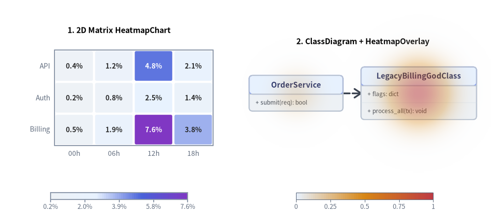
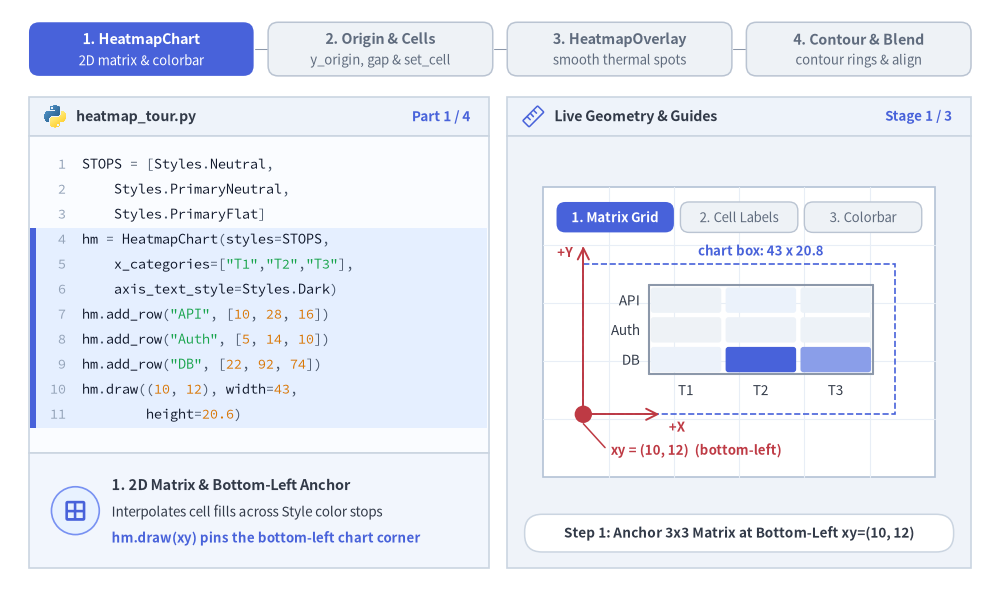
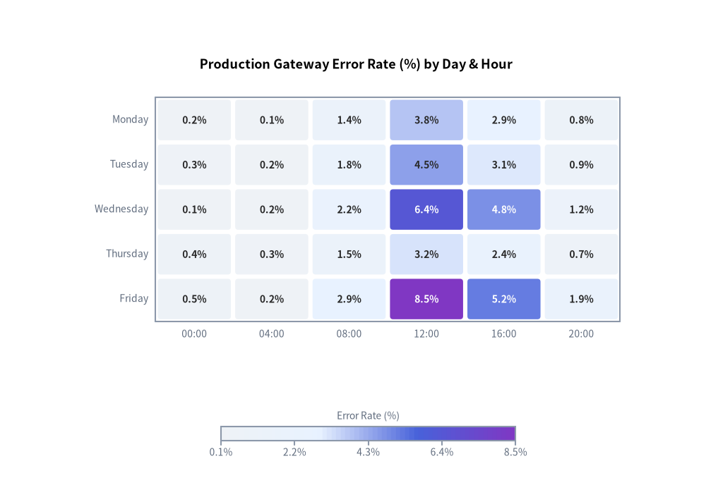
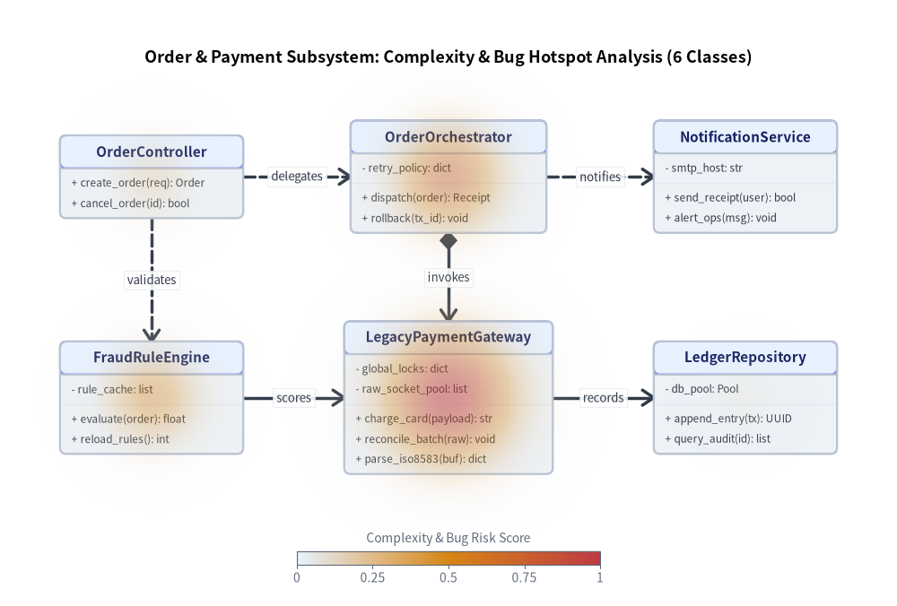
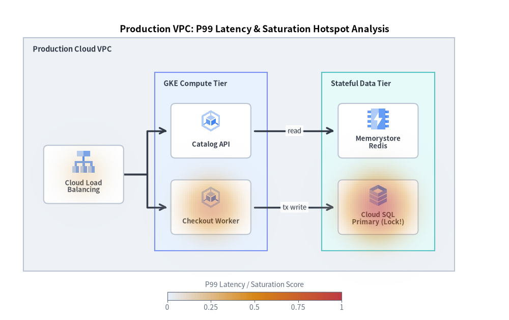

Heatmap & Thermal Overlay（ヒートマップ）：2D マトリクスとダイアグラム熱分布オーバーレイ
drawlib.charts.heatmap は、Style のカラーストップ補間（styles=[Style, ...] または min_style=...、max_style=...）で彩られる 2 つの相補的なヒートマップ可視化クラスを提供します。
HeatmapChart: カテゴリ軸x_categories×y_categories上の標準的な 2D マトリクス／グリッド型ヒートマップです。背景明度に応じて文字色を自動反転するセル内数値ラベル、セル間隔・角丸めの調整（cell_gap、cell_r）、および連続カラーバー（draw_colorbar）や段階別凡例（draw_legend）を備えています。HeatmapOverlay:ClassDiagram、ArchitectureDiagram、ErDiagram、GeoMapなどの既存ダイアグラムの上に直接重ねて描画できる空間サーマル／ホットスポットオーバーレイです。高リスクなクラス、循環的複雑度、バグ密度、リージョンやサービスのボトルネックを"smooth"（2D ガウス熱分布グラデーション）または"contour"（同心ベクター等高線リング）モードで強調表示できます。

Source Code
from drawlib.canvas import save, setup
from drawlib.charts.heatmap import HeatmapChart, HeatmapOverlay
from drawlib.diagrams.class_diagram import ClassDiagram, ClassNode
from drawlib.styles import Styles
setup(width=136, height=62)
# Left: 2D Matrix HeatmapChart
matrix = HeatmapChart(
styles=[Styles.Neutral, Styles.PrimaryNeutral, Styles.PrimaryFlat, Styles.AccentFlat],
x_categories=["00h", "06h", "12h", "18h"],
axis_line_style=Styles.Muted,
axis_text_style=Styles.Muted.patch(text_size=10.0),
value_text_style=Styles.BlackBold.patch(text_size=10.0),
width=58.0,
height=40.0,
title="1. 2D Matrix HeatmapChart",
title_style=Styles.BlackBold.patch(text_size=11.5),
value_format="{:.1f}%",
)
matrix.add_row("API", [0.4, 1.2, 4.8, 2.1])
matrix.add_row("Auth", [0.2, 0.8, 2.5, 1.4])
matrix.add_row("Billing", [0.5, 1.9, 7.6, 3.8])
matrix.draw(xy=(4.0, 16.0))
matrix.draw_colorbar(
xy=(14.0, 6.5),
text_style=Styles.Muted.patch(text_size=9.5),
length=38.0,
thickness=2.0,
)
# Right: Spatial Thermal HeatmapOverlay on ClassDiagram
diag = ClassDiagram(
node_style=Styles.Neutral,
header_style=Styles.PrimaryNeutral,
edge_style=Styles.DarkBold,
edge_text_style=Styles.Dark.patch(text_size=9.5),
title="2. ClassDiagram + HeatmapOverlay",
title_style=Styles.BlackBold.patch(text_size=11.5),
)
c_api = diag.add(ClassNode("OrderService", width=26.0).add_method("submit", "req", "bool"), xy=(82.0, 36.0))
c_god = diag.add(
ClassNode("LegacyBillingGodClass", width=32.0)
.add_attribute("flags", "dict")
.add_method("process_all", "tx", "void"),
xy=(116.0, 36.0),
)
diag.connect(c_api, c_god, "dependency", directed=True)
diag.draw(xy=(0.0, 0.0))
overlay = HeatmapOverlay(
styles=[Styles.PrimaryNeutral, Styles.WarningFlat, Styles.DangerFlat],
mode="smooth",
max_alpha=0.55,
)
overlay.add_spot(c_god, value=0.95, radius=19.0)
overlay.add_spot(c_api, value=0.35, radius=14.0)
overlay.draw(xy=(0.0, 0.0))
overlay.draw_colorbar(
xy=(82.0, 6.5),
text_style=Styles.Muted.patch(text_size=9.5),
length=38.0,
thickness=2.0,
)
save()
1. 基本概念と基本的な使い方
HeatmapChart は .add_row(...) や .set_cell(...) でカテゴリ型の 2D グリッドマトリクスを構築し、デフォルトで左下 (x, y) を基準にアンカーします。補間された Style カラーストップの明度に応じてセルラベルの文字色を濃色・白色へ自動切り替え（auto_contrast_text=True）できるのが特徴です。一方、マトリクスグリッドを補完する HeatmapOverlay は、既存のダイアグラムやキャンバス座標（add_spot(...)）の上に "smooth"（2D ガウス熱分布フィールド）または "contour"（同心ベクター等高線リング）を直接投影し、分離配置型の .draw_colorbar(...) スケールや "bottom_left"／"center" 配置と柔軟に組み合わせられます。

Source Code
from __future__ import annotations
from drawlib.anim import Animation
from drawlib.canvas import save, setup
from drawlib.charts.heatmap import HeatmapChart, HeatmapOverlay
from drawlib.icons import code as code_icons
from drawlib.icons import phosphor
from drawlib.lines import line
from drawlib.shapes import circle, rectangle
from drawlib.smartarts import SourceCode, SourceCodeStyles
from drawlib.styles import Styles
from drawlib.text import text
W, H = 138.0, 82.0
setup(width=W, height=H)
anim = Animation(fps=10.0, loop=0)
CODE_TEXT_SIZE = 10.0
PT_TO_CANVAS = W / 720.0
FONT_CANVAS = CODE_TEXT_SIZE * PT_TO_CANVAS
LINE_H = FONT_CANVAS * 1.8
PAD_Y = FONT_CANVAS * 1.2
CODE_STYLES = SourceCodeStyles.get("default", font_lang="en", text_size=CODE_TEXT_SIZE).patch(
box_style=Styles.Neutral.patch(shape_fill_color=(0, 0, 0, 0), shape_line_width=0),
)
PANE_HEADER = Styles.Neutral.patch(
shape_fill_color=(238, 243, 250),
shape_line_color=(203, 213, 225),
shape_line_width=1.2,
shape_r=0.0,
)
EDITOR_BODY = Styles.Neutral.patch(
shape_fill_color=(250, 252, 255),
shape_line_color=(203, 213, 225),
shape_line_width=1.2,
shape_r=0.0,
)
TAKEAWAY_BODY = Styles.Neutral.patch(
shape_fill_color=(242, 246, 253),
shape_line_color=(203, 213, 225),
shape_line_width=1.2,
shape_r=0.0,
)
STUDIO_BODY = Styles.Neutral.patch(
shape_fill_color=(239, 243, 249),
shape_line_color=(203, 213, 225),
shape_line_width=1.2,
shape_r=0.0,
)
PART_ITEMS = [
("1. HeatmapChart", "2D matrix & colorbar"),
("2. Origin & Cells", "y_origin, gap & set_cell"),
("3. HeatmapOverlay", "smooth thermal spots"),
("4. Contour & Blend", "contour rings & align"),
]
def draw_step_bar(active_part: int) -> None:
"""Draw top 4-part progress bar (active_part is 1..4)."""
pill_w = 31.0
pill_h = 7.4
gap = 2.0
start_x = 4.0 + pill_w / 2.0
cy = 75.2
for idx, (label, sublabel) in enumerate(PART_ITEMS, start=1):
cx = start_x + (idx - 1) * (pill_w + gap)
if idx > 1:
prev_cx = cx - (pill_w + gap)
line(
(prev_cx + pill_w / 2.0 + 0.2, cy),
(cx - pill_w / 2.0 - 0.2, cy),
style=Styles.PrimaryBold if idx <= active_part else Styles.MutedThin,
)
if idx == active_part:
st = Styles.PrimaryFlat.patch(shape_r=1.4)
tst = Styles.WhiteBold.patch(text_size=10.3)
sub_tst = Styles.White.patch(text_size=9.5)
elif idx < active_part:
st = Styles.PrimaryNeutral.patch(shape_r=1.4, shape_line_width=1.1)
tst = Styles.PrimaryBold.patch(text_size=10.3)
sub_tst = Styles.Primary.patch(text_size=9.5)
else:
st = Styles.Neutral.patch(shape_r=1.4, shape_line_width=1.1)
tst = Styles.MutedBold.patch(text_size=10.3)
sub_tst = Styles.Muted.patch(text_size=9.5)
rectangle((cx, cy), width=pill_w, height=pill_h, style=st)
text((cx, cy + 1.35), label, style=tst)
text((cx, cy - 1.55), sublabel, style=sub_tst)
def draw_left_pane(
active_part: int,
code_lines: list[str],
hl_range: tuple[int, int],
icon_fn: object,
summary_title: str,
summary_line1: str,
summary_line2: str,
) -> None:
"""Draw left Python code editor + bottom concept takeaway card."""
x0, w = 4.0, 63.5
cx = x0 + w / 2.0
top_y = 63.2
header_h = 5.4
editor_h = 43.8
takeaway_h = 15.8
rectangle((cx, top_y + header_h / 2.0), width=w, height=header_h, style=PANE_HEADER)
code_icons.python((x0 + 3.6, top_y + header_h / 2.0), width=3.4, style=Styles.Neutral)
text(
(x0 + 6.5, top_y + header_h / 2.0),
"heatmap_tour.py",
style=Styles.DarkBold.patch(text_size=10.2, halign="left"),
)
text(
(x0 + w - 2.6, top_y + header_h / 2.0),
f"Part {active_part} / 4",
style=Styles.PrimaryBold.patch(text_size=9.8, halign="right"),
)
rectangle((cx, top_y - editor_h / 2.0), width=w, height=editor_h, style=EDITOR_BODY)
hl_start, hl_end = hl_range
hl_top = top_y - PAD_Y - hl_start * LINE_H
hl_bot = top_y - PAD_Y - (hl_end + 1) * LINE_H
hl_cy = (hl_top + hl_bot) / 2.0
hl_h = hl_top - hl_bot
rectangle(
(cx, hl_cy),
width=w - 0.6,
height=hl_h,
style=Styles.Neutral.patch(shape_fill_color=(229, 239, 255), shape_line_width=0),
)
rectangle(
(x0 + 0.55, hl_cy),
width=0.9,
height=hl_h,
style=Styles.PrimaryFlat.patch(shape_line_width=0),
)
SourceCode.draw(
xy=(x0, top_y),
width=w,
code="\n".join(code_lines),
styles=CODE_STYLES,
code_lang="python",
show_linenum=True,
align="top_left",
)
take_cy = 3.6 + takeaway_h / 2.0
rectangle((cx, take_cy), width=w, height=takeaway_h, style=TAKEAWAY_BODY)
circle(
(x0 + 6.4, take_cy),
radius=3.3,
style=Styles.PrimaryNeutral.patch(shape_line_width=1.2),
)
icon_fn((x0 + 6.4, take_cy), width=3.8, style=Styles.PrimaryBold) # type: ignore[operator]
text(
(x0 + 11.4, take_cy + 3.6),
summary_title,
style=Styles.DarkBold.patch(text_size=10.4, halign="left"),
)
text(
(x0 + 11.4, take_cy - 0.2),
summary_line1,
style=Styles.Dark.patch(text_size=9.7, halign="left"),
)
text(
(x0 + 11.4, take_cy - 3.8),
summary_line2,
style=Styles.PrimaryBold.patch(text_size=9.6, halign="left"),
)
def draw_geometry_studio(param_badge: str, footer_caption: str) -> tuple[float, float]:
"""Draw right geometry lab shell, inner coordinate sheet with subtle grid, and footer."""
x0, w = 70.0, 64.0
cx = x0 + w / 2.0
top_y = 63.2
header_h = 5.4
body_h = 59.6
rectangle((cx, top_y + header_h / 2.0), width=w, height=header_h, style=PANE_HEADER)
phosphor.ruler((x0 + 3.6, top_y + header_h / 2.0), width=3.4, style=Styles.Primary)
text(
(x0 + 6.5, top_y + header_h / 2.0),
"Live Geometry & Guides",
style=Styles.DarkBold.patch(text_size=10.2, halign="left"),
)
text(
(x0 + w - 2.6, top_y + header_h / 2.0),
param_badge,
style=Styles.PrimaryBold.patch(text_size=9.6, halign="right"),
)
rectangle((cx, 3.6 + body_h / 2.0), width=w, height=body_h, style=STUDIO_BODY)
sheet_cx, sheet_cy = cx, 36.2
sheet_w, sheet_h = 54.0, 40.0
sx0, sy0 = sheet_cx - sheet_w / 2.0, sheet_cy - sheet_h / 2.0
rectangle(
(sheet_cx, sheet_cy),
width=sheet_w,
height=sheet_h,
style=Styles.Neutral.patch(
shape_fill_color=(255, 255, 255),
shape_line_color=(180, 194, 214),
shape_line_width=1.2,
),
)
g_st = Styles.MutedThin.patch(line_color=(232, 238, 246), line_width=0.8)
for gx in range(1, 6):
vx = sx0 + gx * (sheet_w / 6.0)
line((vx, sy0), (vx, sy0 + sheet_h), style=g_st)
for gy in range(1, 5):
vy = sy0 + gy * (sheet_h / 5.0)
line((sx0, vy), (sx0 + sheet_w, vy), style=g_st)
rectangle(
(cx, 8.4),
width=59.2,
height=5.2,
style=Styles.Neutral.patch(
shape_fill_color=(255, 255, 255),
shape_line_color=(203, 213, 225),
shape_line_width=1.1,
shape_r=2.4,
),
text=footer_caption,
text_style=Styles.DarkBold.patch(text_size=9.8),
)
return sheet_cx, sheet_cy
def draw_sub_pills(scx: float, labels: list[str], active_idx: int) -> None:
"""Draw 3-step tracker pills near the top of the studio sheet."""
pw, ph, pgap = 16.2, 4.2, 0.9
p_start = scx - (3 * pw + 2 * pgap) / 2.0 + pw / 2.0
for idx, lbl in enumerate(labels):
px = p_start + idx * (pw + pgap)
if idx == active_idx:
pst = Styles.PrimaryFlat.patch(shape_r=1.2)
ptst = Styles.WhiteBold.patch(text_size=9.5)
elif idx < active_idx:
pst = Styles.PrimaryNeutral.patch(shape_r=1.2, shape_line_width=1.0)
ptst = Styles.PrimaryBold.patch(text_size=9.5)
else:
pst = Styles.Neutral.patch(shape_r=1.2, shape_line_width=1.0)
ptst = Styles.Muted.patch(text_size=9.5)
rectangle((px, 52.0), width=pw, height=ph, style=pst, text=lbl, text_style=ptst)
STOPS = [Styles.Neutral, Styles.PrimaryNeutral, Styles.PrimaryFlat]
THERM = [Styles.PrimaryNeutral, Styles.WarningFlat, Styles.DangerFlat]
AXIS_DARK = Styles.Dark.patch(text_size=9.8)
VAL_BOLD = Styles.DarkBold.patch(text_size=10.0)
def draw_service_cards(card_y: float = 37.2) -> tuple[tuple[float, float], tuple[float, float], tuple[float, float]]:
"""Draw 3 calm neutral service cards (Gateway -> Auth -> DB) on the studio sheet."""
gw_xy = (86.8, card_y)
auth_xy = (102.0, card_y)
db_xy = (117.2, card_y)
cw, ch = 11.4, 8.2
rectangle(gw_xy, width=cw, height=ch, style=Styles.Neutral.patch(shape_r=1.2, shape_line_width=1.2))
phosphor.globe((gw_xy[0], card_y + 1.5), width=3.1, style=Styles.DarkBold)
text((gw_xy[0], card_y - 2.0), "Gateway", style=Styles.DarkBold.patch(text_size=9.5))
rectangle(auth_xy, width=cw, height=ch, style=Styles.PrimaryNeutral.patch(shape_r=1.2, shape_line_width=1.2))
phosphor.shield_check((auth_xy[0], card_y + 1.5), width=3.1, style=Styles.PrimaryBold)
text((auth_xy[0], card_y - 2.0), "Auth", style=Styles.DarkBold.patch(text_size=9.6))
rectangle(db_xy, width=cw, height=ch, style=Styles.Neutral.patch(shape_r=1.2, shape_line_width=1.2))
phosphor.database((db_xy[0], card_y + 1.5), width=3.1, style=Styles.DarkBold)
text((db_xy[0], card_y - 2.0), "DB", style=Styles.DarkBold.patch(text_size=9.6))
line((gw_xy[0] + cw / 2.0 + 0.3, card_y), (auth_xy[0] - cw / 2.0 - 0.3, card_y), arrow_head="->", style=Styles.DarkBold)
line((auth_xy[0] + cw / 2.0 + 0.3, card_y), (db_xy[0] - cw / 2.0 - 0.3, card_y), arrow_head="->", style=Styles.DarkBold)
return gw_xy, auth_xy, db_xy
# =========================================================================
# Part 1: HeatmapChart — 2D Matrix Grid, Auto-Contrast Text & Colorbar
# =========================================================================
CHART_STATES = [
(
"grid_only",
3.3,
[
"STOPS = [Styles.Neutral,",
" Styles.PrimaryNeutral,",
" Styles.PrimaryFlat]",
"hm = HeatmapChart(styles=STOPS,",
' x_categories=["T1","T2","T3"],',
" axis_text_style=Styles.Dark)",
'hm.add_row("API", [10, 28, 16])',
'hm.add_row("Auth", [5, 14, 10])',
'hm.add_row("DB", [22, 92, 74])',
"hm.draw((10, 12), width=43,",
" height=20.6)",
],
(3, 10),
"Stage 1 / 3",
"Step 1: Anchor 3x3 Matrix at Bottom-Left xy=(10, 12)",
"1. 2D Matrix & Bottom-Left Anchor",
"Interpolates cell fills across Style color stops",
"hm.draw(xy) pins the bottom-left chart corner",
),
(
"cell_labels",
3.3,
[
"hm = HeatmapChart(",
" styles=STOPS,",
' x_categories=["T1","T2","T3"],',
" axis_text_style=Styles.Dark,",
" value_text_style=",
" Styles.DarkBold,",
" auto_contrast_text=True,",
' value_format="{:.0f}%",',
")",
'# add_row("API" / "Auth" / "DB")',
"hm.draw((10, 12), 43, 21.0)",
],
(4, 7),
"Stage 2 / 3",
"Step 2: value_text_style + Auto Dark/Light Contrast",
"2. Auto-Contrasting Cell Labels",
"Formats values via value_format inside each cell",
"auto_contrast_text=True flips dark/white text",
),
(
"colorbar",
3.4,
[
"hm = HeatmapChart(styles=STOPS,",
' x_categories=["T1","T2","T3"],',
" axis_text_style=Styles.Dark,",
" value_text_style=",
" Styles.DarkBold,",
' value_format="{:.0f}%")',
'# add_row("API" / "Auth" / "DB")',
"hm.draw((10, 14), 43, 20.5)",
"hm.draw_colorbar(xy=(15, 8),",
" text_style=Styles.Dark,",
" length=34)",
],
(8, 10),
"Stage 3 / 3",
"Step 3: Decoupled Continuous Scale via .draw_colorbar()",
"3. Decoupled Colorbar (.draw_colorbar)",
"Place horizontal or vertical scale bar anywhere",
"Inherits data min/max range & value_format",
),
]
for c_idx, (c_mode, dur, code_c, hl_rng, badge_txt, foot_txt, s_t, s_1, s_2) in enumerate(CHART_STATES):
with anim.frame(duration=dur):
draw_step_bar(1)
draw_left_pane(1, code_c, hl_rng, phosphor.grid_four, s_t, s_1, s_2)
scx, scy = draw_geometry_studio(badge_txt, foot_txt)
draw_sub_pills(scx, ["1. Matrix Grid", "2. Cell Labels", "3. Colorbar"], c_idx)
hx = 80.5
hy = 26.8 if c_mode == "colorbar" else 24.8
hw = 43.0
hh = 20.5 if c_mode == "colorbar" else 20.8
hm = HeatmapChart(
styles=STOPS,
x_categories=["T1", "T2", "T3"],
axis_line_style=Styles.Muted,
axis_text_style=AXIS_DARK,
value_text_style=None if c_mode == "grid_only" else VAL_BOLD,
auto_contrast_text=True,
value_format="{:.0f}%",
width=hw,
height=hh,
)
hm.add_row("API", [10, 28, 16])
hm.add_row("Auth", [5, 14, 10])
hm.add_row("DB", [22, 92, 74])
hm.draw(xy=(hx, hy))
if c_mode == "grid_only":
rectangle(
(hx + hw / 2.0, hy + hh / 2.0),
width=hw,
height=hh,
style=Styles.PrimaryDashed.patch(shape_fill_color=(0, 0, 0, 0), shape_line_width=1.2),
)
text(
(hx + hw / 2.0 + 3.0, hy + hh + 1.8),
"chart box: 43 x 20.8",
style=Styles.PrimaryBold.patch(text_size=9.5),
)
line((hx, hy), (hx, hy + hh + 2.4), arrow_head="->", style=Styles.DangerBold.patch(line_width=1.4))
text((hx - 1.4, hy + hh + 1.6), "+Y", style=Styles.DangerBold.patch(text_size=9.5, halign="right"))
line((hx, hy), (hx + 10.5, hy), arrow_head="->", style=Styles.DangerBold.patch(line_width=1.4))
text((hx + 11.8, hy - 1.7), "+X", style=Styles.DangerBold.patch(text_size=9.5, halign="left"))
circle((hx, hy), radius=1.2, style=Styles.DangerFlat)
line((hx, hy - 1.3), (hx + 3.0, 20.2), style=Styles.DangerBold.patch(line_width=1.1))
text((hx + 3.8, 19.8), "xy = (10, 12) (bottom-left)", style=Styles.DangerBold.patch(text_size=9.5, halign="left"))
elif c_mode == "cell_labels":
line((105.0, 43.2), (105.0, 45.8), style=Styles.DarkBold.patch(line_width=1.1))
text((105.0, 47.2), "light cell -> dark text", style=Styles.DarkBold.patch(text_size=9.5))
line((108.8, 30.2), (110.2, 21.8), style=Styles.PrimaryBold.patch(line_width=1.1))
text((scx, 19.8), "dark peak cells (92%, 74%) -> auto white text", style=Styles.PrimaryBold.patch(text_size=9.5))
else:
cb_x, cb_y = 86.5, 22.0
hm.draw_colorbar(
xy=(cb_x, cb_y),
text_style=Styles.Dark.patch(text_size=9.5),
length=34.0,
thickness=2.0,
num_ticks=5,
)
circle((cb_x, cb_y), radius=1.05, style=Styles.DangerFlat)
text((cb_x - 1.6, cb_y + 0.8), "xy", style=Styles.DangerBold.patch(text_size=9.5, halign="right"))
# =========================================================================
# Part 2: Origin & Cells — y_origin, cell_gap / cell_r & .set_cell() / None
# =========================================================================
CELL_STATES = [
(
"origin_flip",
3.3,
[
"hm = HeatmapChart(",
" styles=STOPS,",
' x_categories=["T1","T2","T3"],',
' y_origin="bottom",',
' x_label_position="top",',
" axis_text_style=Styles.Dark,",
" value_text_style=",
" Styles.DarkBold,",
")",
'# Row 0 "API" now starts at bottom',
"hm.draw((10, 12), 42.5, 22.8)",
],
(3, 4),
'y_origin="bottom"',
'y_origin="bottom" + x_label_position="top" Axis Flip',
"Row Origin & Top Column Labels",
'Default y_origin="top" puts row 0 at top',
'y_origin="bottom" flips to Cartesian +Y order',
),
(
"gap_round",
3.3,
[
"hm = HeatmapChart(",
" styles=STOPS,",
' x_categories=["T1","T2","T3"],',
" cell_gap=1.2,",
" cell_r=0.8,",
" axis_text_style=Styles.Dark,",
" value_text_style=",
" Styles.DarkBold,",
")",
"# Rounded tile matrix with 1.2 gap",
"hm.draw((10, 12), 43, 21.2)",
],
(3, 4),
"gap=1.2, r=0.8",
"cell_gap=1.2, cell_r=0.8: Spaced Rounded Matrix Tiles",
"Tile Spacing & Corner Rounding",
"cell_gap separates adjacent cells cleanly",
"cell_r rounds cell corners (clamped safely)",
),
(
"set_cell_override",
3.4,
[
"hm = HeatmapChart(styles=STOPS,",
' x_categories=["T1","T2","T3"],',
" cell_gap=1.2, cell_r=0.8,",
" value_text_style=",
" Styles.DarkBold)",
'hm.add_row("API", [10, 28, None])',
'hm.add_row("Auth", [5, 14, 10])',
'hm.add_row("DB", [22, 92, 74])',
'hm.set_cell("T2", "DB", 98,',
' label="MAX",',
" style=Styles.AccentFlat)",
],
(5, 10),
".set_cell & None",
'.set_cell("T2", "DB", ..., label="MAX") & None Slot',
"Targeted .set_cell() & Empty Slots",
"Pass None in add_row() to leave a slot blank",
".set_cell(x, y) overrides label, value, or style",
),
]
for o_idx, (o_mode, dur, code_o, hl_rng, badge_txt, foot_txt, s_t, s_1, s_2) in enumerate(CELL_STATES):
with anim.frame(duration=dur):
draw_step_bar(2)
draw_left_pane(2, code_o, hl_rng, phosphor.sliders_horizontal, s_t, s_1, s_2)
scx, scy = draw_geometry_studio(badge_txt, foot_txt)
draw_sub_pills(scx, ["1. y_origin", "2. gap & r", "3. .set_cell"], o_idx)
if o_mode == "origin_flip":
hx, hy, hw, hh = 79.2, 23.4, 42.0, 22.6
hm = HeatmapChart(
styles=STOPS,
x_categories=["T1", "T2", "T3"],
y_origin="bottom",
x_label_position="top",
axis_line_style=Styles.Muted,
axis_text_style=AXIS_DARK,
value_text_style=VAL_BOLD,
value_format="{:.0f}%",
width=hw,
height=hh,
)
hm.add_row("API", [10, 28, 16])
hm.add_row("Auth", [5, 14, 10])
hm.add_row("DB", [22, 92, 74])
hm.draw(xy=(hx, hy))
text((103.2, 46.8), 'x_label_position = "top"', style=Styles.PrimaryBold.patch(text_size=9.5))
line((120.5, 27.6), (120.5, 40.2), arrow_head="->", style=Styles.DangerBold.patch(line_width=1.4))
text((121.6, 28.6), "r0", style=Styles.DangerBold.patch(text_size=9.5, halign="left"))
text((121.6, 39.2), "r2", style=Styles.DangerBold.patch(text_size=9.5, halign="left"))
text((scx, 19.8), 'y_origin="bottom": row 0 ("API") at bottom', style=Styles.DangerBold.patch(text_size=9.5))
elif o_mode == "gap_round":
hx, hy, hw, hh = 80.5, 24.8, 43.0, 21.2
hm = HeatmapChart(
styles=STOPS,
x_categories=["T1", "T2", "T3"],
cell_gap=1.2,
cell_r=0.8,
axis_text_style=AXIS_DARK,
value_text_style=VAL_BOLD,
value_format="{:.0f}%",
width=hw,
height=hh,
)
hm.add_row("API", [10, 28, 16])
hm.add_row("Auth", [5, 14, 10])
hm.add_row("DB", [22, 92, 74])
hm.draw(xy=(hx, hy))
# Caliper ticks over column gap at x ~ 99.83 (99.23..100.43)
line((99.23, 43.2), (99.23, 45.6), style=Styles.PrimaryBold.patch(line_width=1.2))
line((100.43, 43.2), (100.43, 45.6), style=Styles.PrimaryBold.patch(line_width=1.2))
text((99.83, 47.1), "cell_gap = 1.2", style=Styles.PrimaryBold.patch(text_size=9.5))
line((119.5, 30.8), (116.5, 21.6), style=Styles.DangerBold.patch(line_width=1.1))
text((scx, 19.8), "cell_r = 0.8 (rounded tile corners)", style=Styles.DangerBold.patch(text_size=9.5))
else:
hx, hy, hw, hh = 80.5, 24.8, 43.0, 21.2
hm = HeatmapChart(
styles=STOPS,
x_categories=["T1", "T2", "T3"],
cell_gap=1.2,
cell_r=0.8,
axis_text_style=AXIS_DARK,
value_text_style=VAL_BOLD,
value_format="{:.0f}%",
width=hw,
height=hh,
)
hm.add_row("API", [10, 28, None])
hm.add_row("Auth", [5, 14, 10])
hm.add_row("DB", [22, 92, 74])
hm.set_cell("T2", "DB", 98, label="MAX", style=Styles.AccentFlat)
hm.draw(xy=(hx, hy))
# Ghost slot outline in empty ("T3", "API") cell at (115.33, 40.88)
rectangle(
(115.33, 40.88),
width=9.13,
height=3.03,
style=Styles.MutedDashed.patch(
shape_fill_color=(248, 250, 252),
shape_line_color=(148, 163, 184),
shape_line_width=1.1,
shape_r=0.8,
),
text="None",
text_style=Styles.MutedBold.patch(text_size=9.5),
)
line((115.33, 42.6), (115.33, 45.6), style=Styles.DarkBold.patch(line_width=1.1))
text((111.5, 47.1), "None -> empty slot", style=Styles.DarkBold.patch(text_size=9.5))
line((108.6, 30.7), (110.2, 21.8), style=Styles.DangerBold.patch(line_width=1.2))
text((scx, 19.8), '.set_cell("T2", "DB", 98, label="MAX")', style=Styles.DangerBold.patch(text_size=9.5))
# =========================================================================
# Part 3: HeatmapOverlay — Smooth Gaussian Thermal Spots Over Topology
# =========================================================================
OVERLAY_STATES = [
(
"base_cards",
3.3,
[
"# 1. Calm neutral service topology",
"rectangle(gw_xy, 11.4, 8.2,",
" style=Styles.Neutral,",
' text="Gateway")',
"rectangle(auth_xy, 11.4, 8.2,",
" style=Styles.PrimaryNeutral,",
' text="Auth")',
"rectangle(db_xy, 11.4, 8.2,",
" style=Styles.Neutral,",
' text="DB")',
"# Connect Gateway -> Auth -> DB",
],
(1, 9),
"Stage 1 / 3",
"Step 1: Calm Neutral Topology (Gateway -> Auth -> DB)",
"1. Base Architecture or Diagram",
"Draw neutral cards, UML, VPC, or GeoMap first",
"Keep base fills calm so thermal spots pop",
),
(
"single_spot",
3.3,
[
"THERM = [Styles.PrimaryNeutral,",
" Styles.WarningFlat,",
" Styles.DangerFlat]",
"ov = HeatmapOverlay(",
" styles=THERM,",
' mode="smooth",',
" max_alpha=0.55,",
")",
"ov.add_spot(",
" db_xy, value=0.95, radius=9.5)",
"ov.draw()",
],
(3, 10),
"Stage 2 / 3",
"Step 2: Smooth Gaussian Hotspot Over DB (value=0.95)",
"2. Smooth Thermal Spot (.add_spot)",
"2D Gaussian glow centered at (x, y) or Node",
"max_alpha=0.55 keeps underlying text legible",
),
(
"multi_spot",
3.4,
[
"ov = HeatmapOverlay(",
' styles=THERM, mode="smooth",',
" max_alpha=0.55)",
"ov.add_spot(db_xy, 0.95, 9.5)",
"ov.add_spot(auth_xy, 0.62, 9.0)",
"ov.add_spot(gw_xy, 0.28, 8.0)",
"ov.draw()",
"ov.draw_colorbar(",
" xy=(15, 6),",
" text_style=Styles.Dark,",
" length=34)",
],
(3, 10),
"Stage 3 / 3",
"Step 3: Multi-Spot Thermal Field + .draw_colorbar()",
"3. Multi-Spot Field & Colorbar",
"Combine cool, warm, and hot service spots",
"Pair with .draw_colorbar() for 0..1 intensity",
),
]
for v_idx, (v_mode, dur, code_v, hl_rng, badge_txt, foot_txt, s_t, s_1, s_2) in enumerate(OVERLAY_STATES):
with anim.frame(duration=dur):
draw_step_bar(3)
draw_left_pane(3, code_v, hl_rng, phosphor.fire, s_t, s_1, s_2)
scx, scy = draw_geometry_studio(badge_txt, foot_txt)
draw_sub_pills(scx, ["1. Service Cards", "2. Single Spot", "3. Multi-Spot"], v_idx)
gw_xy, auth_xy, db_xy = draw_service_cards(card_y=37.2)
if v_mode == "base_cards":
for lbl_xy, pos in (("gw_xy", gw_xy), ("auth_xy", auth_xy), ("db_xy", db_xy)):
line((pos[0], pos[1] - 4.5), (pos[0], 27.6), arrow_head="<-", style=Styles.PrimaryBold.patch(line_width=1.1))
text((pos[0], 25.6), lbl_xy, style=Styles.PrimaryBold.patch(text_size=9.5))
text((scx, 20.0), "Calm neutral cards ready for thermal overlay", style=Styles.DarkBold.patch(text_size=9.5))
elif v_mode == "single_spot":
ov = HeatmapOverlay(styles=THERM, mode="smooth", max_alpha=0.55)
ov.add_spot(db_xy, value=0.95, radius=9.5)
ov.draw()
circle(
db_xy,
radius=9.5,
style=Styles.DangerDashed.patch(shape_fill_color=(0, 0, 0, 0), shape_line_width=1.1),
)
line((db_xy[0], db_xy[1] - 9.7), (db_xy[0] - 4.0, 22.2), style=Styles.DangerBold.patch(line_width=1.1))
text((scx, 20.0), "add_spot(db_xy, value=0.95, radius=9.5)", style=Styles.DangerBold.patch(text_size=9.5))
else:
ov = HeatmapOverlay(styles=THERM, mode="smooth", max_alpha=0.55, min_value=0.0, max_value=1.0)
ov.add_spot(db_xy, value=0.95, radius=9.5)
ov.add_spot(auth_xy, value=0.62, radius=9.0)
ov.add_spot(gw_xy, value=0.28, radius=8.0)
ov.draw()
ov.draw_colorbar(
xy=(85.0, 21.8),
text_style=Styles.Dark.patch(text_size=9.5),
length=34.0,
thickness=2.0,
num_ticks=5,
)
# =========================================================================
# Part 4: Contour & Blend — mode="contour", blend_mode & align="center"
# =========================================================================
CONTOUR_STATES = [
(
"contour_rings",
3.3,
[
"ov = HeatmapOverlay(",
" styles=THERM,",
' mode="contour",',
" levels=4,",
" max_alpha=0.48,",
")",
"ov.add_spot(db_xy, 0.95, 9.5)",
"ov.add_spot(auth_xy, 0.60, 8.2)",
"ov.draw()",
],
(2, 3),
'mode="contour"',
'mode="contour", levels=4: Concentric Vector Isolines',
'Vector Isolines (mode="contour")',
"Draws discrete dashed & solid concentric rings",
"Crisp resolution-independent print geometry",
),
(
"blend_modes",
3.4,
[
"# Overlapping smooth hotspots:",
"ov = HeatmapOverlay(",
' styles=THERM, mode="smooth",',
' blend_mode="add", # or "max"',
" max_alpha=0.72,",
")",
"ov.add_spot(spot_a, 0.55, 8.4)",
"ov.add_spot(spot_b, 0.55, 8.4)",
"ov.draw()",
],
(3, 3),
"blend_mode",
'blend_mode="max" (Capped) vs. "add" (Cumulative Peak)',
'Overlap Blending ("max" vs "add")',
'"max" caps overlap at highest single spot (0.55)',
'"add" sums overlapping heat into a critical peak',
),
(
"center_align",
3.5,
[
"ov = HeatmapOverlay(",
' styles=THERM, mode="contour",',
" levels=4,",
" width=42, height=20,",
" border_style=",
" Styles.PrimaryDashed)",
"ov.add_spot((11.5, 10), 0.60, 7.5)",
"ov.add_spot((30.5, 10), 0.95, 8.5)",
"ov.draw(",
' xy=(34, 24), align="center")',
],
(8, 9),
'align="center"',
'align="center": Centers Overlay Box on xy=(cx, cy)',
'Centered Anchor (align="center")',
"Centers fixed or auto-bounded overlay on (cx, cy)",
"Supported on both HeatmapChart & HeatmapOverlay",
),
]
for k_idx, (k_mode, dur, code_k, hl_rng, badge_txt, foot_txt, s_t, s_1, s_2) in enumerate(CONTOUR_STATES):
with anim.frame(duration=dur):
draw_step_bar(4)
draw_left_pane(4, code_k, hl_rng, phosphor.target, s_t, s_1, s_2)
scx, scy = draw_geometry_studio(badge_txt, foot_txt)
draw_sub_pills(scx, ["1. Contour", '2. "max" / "add"', "3. Center Align"], k_idx)
if k_mode == "contour_rings":
gw_xy, auth_xy, db_xy = draw_service_cards(card_y=36.5)
ov = HeatmapOverlay(styles=THERM, mode="contour", levels=4, max_alpha=0.48)
ov.add_spot(db_xy, value=0.95, radius=9.5)
ov.add_spot(auth_xy, value=0.60, radius=8.2)
ov.draw()
line((db_xy[0], db_xy[1] - 9.7), (db_xy[0] - 4.5, 21.8), style=Styles.DangerBold.patch(line_width=1.1))
text((scx, 19.8), 'mode="contour", levels=4 (3 dashed + 1 solid ring)', style=Styles.DangerBold.patch(text_size=9.5))
elif k_mode == "blend_modes":
line((scx, 18.6), (scx, 47.8), style=Styles.MutedDashed.patch(line_width=1.1))
# Left: blend_mode="max"
l_a, l_b = (86.4, 33.8), (90.6, 33.8)
for pos, lbl in ((l_a, "A"), (l_b, "B")):
rectangle(pos, width=3.4, height=3.4, style=Styles.Neutral.patch(shape_r=0.9), text=lbl, text_style=Styles.DarkBold.patch(text_size=9.5))
ov_max = HeatmapOverlay(styles=THERM, mode="smooth", blend_mode="max", max_alpha=0.72)
ov_max.add_spot(l_a, value=0.55, radius=8.4)
ov_max.add_spot(l_b, value=0.55, radius=8.4)
ov_max.draw()
text((88.5, 45.8), 'blend_mode="max"', style=Styles.DarkBold.patch(text_size=9.6))
text((88.5, 20.2), "capped <= 0.55", style=Styles.DarkBold.patch(text_size=9.5))
# Right: blend_mode="add"
r_a, r_b = (113.4, 33.8), (117.6, 33.8)
for pos, lbl in ((r_a, "A"), (r_b, "B")):
rectangle(pos, width=3.4, height=3.4, style=Styles.Neutral.patch(shape_r=0.9), text=lbl, text_style=Styles.DarkBold.patch(text_size=9.5))
ov_add = HeatmapOverlay(styles=THERM, mode="smooth", blend_mode="add", max_alpha=0.72)
ov_add.add_spot(r_a, value=0.55, radius=8.4)
ov_add.add_spot(r_b, value=0.55, radius=8.4)
ov_add.draw()
text((115.5, 45.8), 'blend_mode="add"', style=Styles.DangerBold.patch(text_size=9.6))
text((115.5, 20.2), "sums to ~0.95!", style=Styles.DangerBold.patch(text_size=9.5))
else:
cx_a, cy_a = scx, 34.4
ow, oh = 42.0, 20.0
c_left = (cx_a - 9.5, cy_a)
c_right = (cx_a + 9.5, cy_a)
rectangle(c_left, width=10.6, height=7.4, style=Styles.PrimaryNeutral.patch(shape_r=1.2), text="Auth", text_style=Styles.DarkBold.patch(text_size=9.6))
rectangle(c_right, width=10.6, height=7.4, style=Styles.Neutral.patch(shape_r=1.2), text="DB", text_style=Styles.DarkBold.patch(text_size=9.6))
ov_c = HeatmapOverlay(
styles=THERM,
mode="contour",
levels=4,
max_alpha=0.48,
width=ow,
height=oh,
border_style=Styles.PrimaryDashed.patch(shape_line_width=1.3),
)
ov_c.add_spot((11.5, 10.0), value=0.60, radius=7.5)
ov_c.add_spot((30.5, 10.0), value=0.95, radius=8.5)
ov_c.draw(xy=(cx_a, cy_a), align="center")
# Red center crosshair ticks outside 42x20 box
line((cx_a - 23.4, cy_a), (cx_a - 21.0, cy_a), style=Styles.DangerBold.patch(line_width=1.5))
line((cx_a + 21.0, cy_a), (cx_a + 23.4, cy_a), style=Styles.DangerBold.patch(line_width=1.5))
line((cx_a, cy_a + 10.0), (cx_a, cy_a + 12.4), style=Styles.DangerBold.patch(line_width=1.5))
line((cx_a, cy_a - 12.2), (cx_a, cy_a - 10.0), style=Styles.DangerBold.patch(line_width=1.5))
circle(
(cx_a, cy_a),
radius=1.55,
style=Styles.Neutral.patch(shape_fill_color=(255, 255, 255), shape_line_width=0),
)
circle((cx_a, cy_a), radius=1.1, style=Styles.DangerFlat)
text((cx_a, 19.6), 'xy = (34, 24) • align="center"', style=Styles.DangerBold.patch(text_size=9.6))
save()
HeatmapChartとHeatmapOverlayの役割分担: 表形式の 2D カテゴリマトリクス（x_categories×y_categories）にはHeatmapChartを使用し、既存の図（ClassDiagram、ArchitectureDiagram、GeoMap、またはカスタムカード）の上に空間的なサーマルホットスポット（add_spot(xy_or_node, value, radius)）を投影する場合にはHeatmapOverlayを使用します。- スタイルのカラーストップ補間とカラーバー（
styles,draw_colorbar）: 両クラスともstyles=[Style, ...]（またはmin_style/max_style）に沿って色を補間し、分離配置可能な.draw_colorbar(xy, text_style, length=...)と.draw_legend(...)ヘルパーを備えています。さらにHeatmapChartでは、auto_contrast_text=Trueの際にセル背景の明暗に応じて暗色／明色ラベルを自動反転します。 - マトリクスの行方向とセル個別上書き（
y_origin,cell_gap,set_cell）:HeatmapChartの行順序をy_origin="top"（表順）とy_origin="bottom"（デカルト座標順）で切り替えたり、x_label_position="bottom" | "top"、cell_gap、cell_rを調整したり、Noneで欠損セルを空欄にしたり、.set_cell(x, y, value, label=..., style=...)で特定のセルを強調したりできます。 - オーバーレイモード・重なり合成・配置基準（
mode,blend_mode,align）:HeatmapOverlayをmode="smooth"（重なり領域を累積加算blend_mode="add"または包絡最大値"max"で合成）とmode="contour"（levels=N段のベクター等値線リング）で切り替えられ、いずれのクラスも"bottom_left"（デフォルト）またはalign="center"で配置できます。
2. 標準的な 2D マトリクスヒートマップ（HeatmapChart）
HeatmapChart は、x_categories と y_categories にわたる 2D グリッドの数値を補間された Style カラーにマッピングし、セルラベルのコントラストを自動調整（auto_contrast_text=True）することで、明るいセルと暗いセルのどちらでも数値の高い視認性を保ちます。
from drawlib.canvas import save, setup
from drawlib.charts.heatmap import HeatmapChart
from drawlib.styles import Styles
setup(width=115, height=80)
chart = HeatmapChart(
styles=[Styles.Neutral, Styles.PrimaryNeutral, Styles.PrimaryFlat, Styles.AccentFlat],
x_categories=["00:00", "04:00", "08:00", "12:00", "16:00", "20:00"],
axis_line_style=Styles.Muted,
axis_text_style=Styles.Muted.patch(text_size=10.0),
value_text_style=Styles.BlackBold.patch(text_size=10.0),
width=92.0,
height=50.0,
cell_gap=0.7,
cell_r=0.5,
title="Production Gateway Error Rate (%) by Day & Hour",
title_style=Styles.BlackBold.patch(text_size=13.0),
value_format="{:.1f}%",
)
chart.add_row("Monday", [0.2, 0.1, 1.4, 3.8, 2.9, 0.8])
chart.add_row("Tuesday", [0.3, 0.2, 1.8, 4.5, 3.1, 0.9])
chart.add_row("Wednesday", [0.1, 0.2, 2.2, 6.4, 4.8, 1.2])
chart.add_row("Thursday", [0.4, 0.3, 1.5, 3.2, 2.4, 0.7])
chart.add_row("Friday", [0.5, 0.2, 2.9, 8.5, 5.2, 1.9])
chart.draw(xy=(12.0, 22.0))
chart.draw_colorbar(
xy=(36.0, 8.0),
text_style=Styles.Muted.patch(text_size=10.0),
length=48.0,
thickness=2.4,
label="Error Rate (%)",
)
save()

3. 6 クラスの ClassDiagram ホットスポット重ね合わせ（HeatmapOverlay：Smooth モード）
コードベース、アーキテクチャトポロジー、または UML クラスモデルを分析する際、HeatmapOverlay を使うと脆弱なコンポーネントや複雑度の高いコンポーネントの上で視覚的な温度を引き上げることができます（add_spot(class_node, value=..., radius=...)）。ClassNode を直接渡すと、キャンバス上の中心座標 .xy が自動的に解決されます。
次の例では、注文・決済サブシステムの 6 クラス UML ClassDiagram の上に滑らかな 2D ガウス分布サーマルフィールド（mode="smooth"）を重ね合わせ、高リスクな God クラス LegacyPaymentGateway（0.96）と、それに密結合している OrderOrchestrator（0.72）および FraudRuleEngine（0.55）を視覚的に特定しています。
from drawlib.canvas import save, setup
from drawlib.charts.heatmap import HeatmapOverlay
from drawlib.diagrams.class_diagram import ClassDiagram, ClassNode
from drawlib.styles import Styles
setup(width=142, height=96)
# 1. Build 6-Class UML ClassDiagram (2 rows x 3 columns)
diagram = ClassDiagram(
node_style=Styles.Neutral,
header_style=Styles.PrimaryNeutral,
edge_style=Styles.DarkBold,
edge_text_style=Styles.Dark.patch(text_size=9.5),
title="Order & Payment Subsystem: Complexity & Bug Hotspot Analysis (6 Classes)",
title_style=Styles.BlackBold.patch(text_size=13.0),
margin=8.0,
)
# Top Tier (Row 1: y = 68.0)
ctrl = diagram.add(
ClassNode("OrderController", width=29.0)
.add_method("create_order", "req", "Order")
.add_method("cancel_order", "id", "bool"),
xy=(24.0, 68.0),
)
orch = diagram.add(
ClassNode("OrderOrchestrator", width=31.0)
.add_attribute("retry_policy", "dict", is_public=False)
.add_method("dispatch", "order", "Receipt")
.add_method("rollback", "tx_id", "void"),
xy=(71.0, 68.0),
)
notif = diagram.add(
ClassNode("NotificationService", width=29.0)
.add_attribute("smtp_host", "str", is_public=False)
.add_method("send_receipt", "user", "bool")
.add_method("alert_ops", "msg", "void"),
xy=(118.0, 68.0),
)
# Bottom Tier (Row 2: y = 33.0)
fraud = diagram.add(
ClassNode("FraudRuleEngine", width=29.0)
.add_attribute("rule_cache", "list", is_public=False)
.add_method("evaluate", "order", "float")
.add_method("reload_rules", "", "int"),
xy=(24.0, 33.0),
)
gateway = diagram.add(
ClassNode("LegacyPaymentGateway", width=33.0)
.add_attribute("global_locks", "dict", is_public=False)
.add_attribute("raw_socket_pool", "list", is_public=False)
.add_method("charge_card", "payload", "str")
.add_method("reconcile_batch", "raw", "void")
.add_method("parse_iso8583", "buf", "dict"),
xy=(71.0, 33.0),
)
ledger = diagram.add(
ClassNode("LedgerRepository", width=29.0)
.add_attribute("db_pool", "Pool", is_public=False)
.add_method("append_entry", "tx", "UUID")
.add_method("query_audit", "id", "list"),
xy=(118.0, 33.0),
)
# Connect the 6 classes orthogonally
diagram.connect(ctrl, orch, "dependency", start_side="right", end_side="left", label="delegates", directed=True)
diagram.connect(orch, notif, "dependency", start_side="right", end_side="left", label="notifies", directed=True)
diagram.connect(ctrl, fraud, "dependency", start_side="bottom", end_side="top", label="validates", directed=True)
diagram.connect(orch, gateway, "composition", start_side="bottom", end_side="top", label="invokes", directed=True)
diagram.connect(fraud, gateway, "association", start_side="right", end_side="left", label="scores", directed=True)
diagram.connect(gateway, ledger, "association", start_side="right", end_side="left", label="records", directed=True)
diagram.draw(xy=(0.0, 0.0))
# 2. Overlay Thermal Hotspots directly onto ClassNode coordinates
overlay = HeatmapOverlay(
styles=[Styles.PrimaryNeutral, Styles.WarningFlat, Styles.DangerFlat],
mode="smooth",
max_alpha=0.55,
blend_mode="max",
)
overlay.add_spot(gateway, value=0.96, radius=22.0)
overlay.add_spot(orch, value=0.72, radius=18.0)
overlay.add_spot(fraud, value=0.55, radius=16.0)
overlay.add_spot(ctrl, value=0.30, radius=14.0)
overlay.add_spot(ledger, value=0.15, radius=12.0)
overlay.draw(xy=(0.0, 0.0))
overlay.draw_colorbar(
xy=(47.0, 6.5),
text_style=Styles.Muted.patch(text_size=10.0),
length=48.0,
thickness=2.2,
label="Complexity & Bug Risk Score",
)
save()

4. 同心等値線リングの重ね合わせ（mode="contour"）
連続的なグラデーションよりも離散的な等値線リングが適しているシャープなベクター図や印刷向けドキュメントでは、6 クラス図に対して mode="contour" と levels=4 を設定します。
from drawlib.canvas import save, setup
from drawlib.charts.heatmap import HeatmapOverlay
from drawlib.diagrams.class_diagram import ClassDiagram, ClassNode
from drawlib.styles import Styles
setup(width=142, height=96)
diagram = ClassDiagram(
node_style=Styles.Neutral,
header_style=Styles.PrimaryNeutral,
edge_style=Styles.DarkBold,
edge_text_style=Styles.Dark.patch(text_size=9.5),
title="Change Blast Radius Analysis Across 6 Classes (mode='contour')",
title_style=Styles.BlackBold.patch(text_size=13.0),
margin=10.0,
)
# Top Tier (Row 1: y = 66.0)
ctrl = diagram.add(
ClassNode("OrderController", width=29.0)
.add_method("create_order", "req", "Order")
.add_method("cancel_order", "id", "bool"),
xy=(24.0, 66.0),
)
orch = diagram.add(
ClassNode("OrderOrchestrator", width=31.0)
.add_attribute("retry_policy", "dict", is_public=False)
.add_method("dispatch", "order", "Receipt")
.add_method("rollback", "tx_id", "void"),
xy=(71.0, 66.0),
)
notif = diagram.add(
ClassNode("NotificationService", width=29.0)
.add_attribute("smtp_host", "str", is_public=False)
.add_method("send_receipt", "user", "bool")
.add_method("alert_ops", "msg", "void"),
xy=(118.0, 66.0),
)
# Bottom Tier (Row 2: y = 32.0)
fraud = diagram.add(
ClassNode("FraudRuleEngine", width=29.0)
.add_attribute("rule_cache", "list", is_public=False)
.add_method("evaluate", "order", "float")
.add_method("reload_rules", "", "int"),
xy=(24.0, 32.0),
)
gateway = diagram.add(
ClassNode("LegacyPaymentGateway", width=33.0)
.add_attribute("global_locks", "dict", is_public=False)
.add_attribute("raw_socket_pool", "list", is_public=False)
.add_method("charge_card", "payload", "str")
.add_method("reconcile_batch", "raw", "void")
.add_method("parse_iso8583", "buf", "dict"),
xy=(71.0, 32.0),
)
ledger = diagram.add(
ClassNode("LedgerRepository", width=29.0)
.add_attribute("db_pool", "Pool", is_public=False)
.add_method("append_entry", "tx", "UUID")
.add_method("query_audit", "id", "list"),
xy=(118.0, 32.0),
)
diagram.connect(ctrl, orch, "dependency", start_side="right", end_side="left", label="delegates", directed=True)
diagram.connect(orch, notif, "dependency", start_side="right", end_side="left", label="notifies", directed=True)
diagram.connect(ctrl, fraud, "dependency", start_side="bottom", end_side="top", label="validates", directed=True)
diagram.connect(orch, gateway, "composition", start_side="bottom", end_side="top", label="invokes", directed=True)
diagram.connect(fraud, gateway, "association", start_side="right", end_side="left", label="scores", directed=True)
diagram.connect(gateway, ledger, "association", start_side="right", end_side="left", label="records", directed=True)
diagram.draw(xy=(0.0, 0.0))
overlay = HeatmapOverlay(
styles=[Styles.PrimaryNeutral, Styles.WarningFlat, Styles.DangerFlat],
mode="contour",
levels=4,
max_alpha=0.45,
)
overlay.add_spot(gateway, value=0.96, radius=20.0)
overlay.add_spot(orch, value=0.72, radius=16.0)
overlay.add_spot(fraud, value=0.55, radius=14.0)
overlay.draw(xy=(0.0, 0.0))
overlay.draw_legend(
xy=(43.0, 6.0),
text_style=Styles.Muted.patch(text_size=10.0),
orientation="horizontal",
labels=["Low", "Moderate", "High", "Critical"],
)
save()

5. クラウドアーキテクチャのレイテンシ・障害オーバーレイ（ArchitectureDiagram + HeatmapOverlay）
HeatmapOverlay.add_spot() は ArchitectureDiagram の Node および NodeGroup インスタンスも直接受け取ることができます。ネストされた NodeGroup 階層の座標オフセットが自動解決されるため、クラウドアーキテクチャ図の上でインフラのボトルネック、CPU 飽和、または P99 レイテンシスパイクを直感的に強調できます。
from drawlib.canvas import save, setup
from drawlib.charts.heatmap import HeatmapOverlay
from drawlib.diagrams.architecture import ArchitectureDiagram, GcpIcon, Node, NodeGroup
from drawlib.styles import Colors, Styles
setup(width=140, height=88)
arch = ArchitectureDiagram(
node_style=Styles.Primary,
node_text_style=Styles.DarkBold.patch(text_size=9.5),
edge_style=Styles.DarkBold,
edge_text_style=Styles.Dark.patch(text_size=9.5),
node_card_style=Styles.Neutral.patch(shape_fill_color=Colors.White, shape_r=1.2),
)
vpc = arch.add(
NodeGroup(
title="Production Cloud VPC",
padding=5.5,
style=Styles.Neutral,
text_style=Styles.DarkBold.patch(text_size=10.5, halign="left", valign="top"),
),
xy=(8.0, 15.0),
)
# Edge Ingress
lb = vpc.add(
Node("Cloud Load\nBalancing", width=22.0, height=16.0, icon=GcpIcon.CLOUD_LOAD_BALANCING, icon_size=6.8),
xy=(15.0, 25.0),
)
# Compute Subnet
compute_grp = vpc.add(
NodeGroup(
title="GKE Compute Tier",
padding=4.5,
style=Styles.PrimaryNeutral,
text_style=Styles.DarkBold.patch(text_size=10.0, halign="left", valign="top"),
),
xy=(36.0, 4.0),
)
api_svc = compute_grp.add(
Node("Catalog API", width=22.0, height=15.0, icon=GcpIcon.GOOGLE_KUBERNETES_ENGINE, icon_size=6.5),
xy=(14.0, 33.0),
)
checkout_svc = compute_grp.add(
Node("Checkout Worker", width=22.0, height=15.0, icon=GcpIcon.GOOGLE_KUBERNETES_ENGINE, icon_size=6.5),
xy=(14.0, 12.0),
)
# Data Subnet
data_grp = vpc.add(
NodeGroup(
title="Stateful Data Tier",
padding=4.5,
style=Styles.SecondaryNeutral,
text_style=Styles.DarkBold.patch(text_size=10.0, halign="left", valign="top"),
),
xy=(82.0, 4.0),
)
cache_node = data_grp.add(
Node("Memorystore\nRedis", width=22.0, height=15.0, icon=GcpIcon.MEMORYSTORE, icon_size=6.5),
xy=(14.0, 33.0),
)
sql_primary = data_grp.add(
Node("Cloud SQL\nPrimary (Lock!)", width=22.0, height=15.0, icon=GcpIcon.CLOUD_SQL, icon_size=6.5),
xy=(14.0, 12.0),
)
lb.fork([api_svc, checkout_svc], at_x=34.0, padding=1.0)
api_svc.connect(cache_node, label="read", padding=1.0)
checkout_svc.connect(sql_primary, label="tx write", padding=1.0)
arch.draw(xy=(0.0, 0.0))
# Overlay thermal hotspots directly on nested ArchitectureDiagram Nodes
overlay = HeatmapOverlay(
styles=[Styles.PrimaryNeutral, Styles.WarningFlat, Styles.DangerFlat],
mode="smooth",
max_alpha=0.58,
width=140.0,
height=77.0,
title="Production VPC: P99 Latency & Saturation Hotspot Analysis",
title_style=Styles.BlackBold.patch(text_size=13.0),
)
overlay.add_spot(sql_primary, value=0.96, radius=19.0)
overlay.add_spot(checkout_svc, value=0.72, radius=17.0)
overlay.add_spot(lb, value=0.35, radius=14.0)
overlay.draw(xy=(0.0, 0.0))
overlay.draw_colorbar(
xy=(46.0, 5.5),
text_style=Styles.Muted.patch(text_size=10.0),
length=48.0,
thickness=2.2,
label="P99 Latency / Saturation Score",
)
save()

6. 地理的トラフィック・地域別ヒートマップ（GeoMap + HeatmapOverlay）
GeoMap（drawlib.smartarts.GeoMap）と組み合わせる場合は、gmap.get_area_xy(area)（国名・都道府県名・市区町村名による指定）または gmap.lonlat_to_xy(lon, lat)（経緯度による指定）を overlay.add_spot() に直接渡すことで、世界地図・国別地図・都市地図の上に地理的ヒートマップを構築できます。
from drawlib.canvas import save, setup
from drawlib.charts.heatmap import HeatmapOverlay
from drawlib.shapes import rectangle
from drawlib.smartarts import GeoMap
from drawlib.styles import Colors, Styles
from drawlib.text import text
setup(width=140, height=78)
card_style = Styles.Neutral.patch(shape_r=2.0, shape_line_color=Colors.Gray4, shape_fill_color=Colors.White)
rectangle((36.5, 43.0), width=65.0, height=58.0, style=card_style)
rectangle((103.5, 43.0), width=65.0, height=58.0, style=card_style)
text((36.5, 68.5), "1. Global Edge Traffic (GeoMap.World.All)", style=Styles.BlackBold.patch(text_size=11.0))
text((103.5, 68.5), "2. Domestic Load by Prefecture (GeoMap.Countries.Japan)", style=Styles.BlackBold.patch(text_size=11.0))
# Left: World Map + HeatmapOverlay
world = GeoMap(GeoMap.World.All, area_style=Styles.Neutral)
world.draw(xy=(6.5, 16.0), width=60.0, height=48.0)
world_overlay = HeatmapOverlay(
styles=[Styles.PrimaryNeutral, Styles.WarningFlat, Styles.DangerFlat],
mode="smooth",
max_alpha=0.62,
min_value=0.0,
max_value=1.0,
)
world_overlay.add_spot(world.get_area_xy("Japan"), value=0.95, radius=9.5, label="Tokyo")
world_overlay.add_spot(world.get_area_xy("United States"), value=0.85, radius=11.0, label="US-East")
world_overlay.add_spot(world.get_area_xy("Germany"), value=0.72, radius=9.5, label="EU-Central")
world_overlay.add_spot(world.get_area_xy("Singapore"), value=0.60, radius=8.5, label="Singapore")
world_overlay.add_spot(world.get_area_xy("Brazil"), value=0.40, radius=8.0)
world_overlay.draw(xy=(0.0, 0.0))
# Right: Japan Map + HeatmapOverlay
jp = GeoMap(GeoMap.Countries.Japan, area_style=Styles.Neutral)
jp.draw(xy=(73.5, 16.0), width=60.0, height=48.0, lon_range=(129, 146), lat_range=(30, 46))
jp_overlay = HeatmapOverlay(
styles=[Styles.PrimaryNeutral, Styles.WarningFlat, Styles.DangerFlat],
mode="smooth",
max_alpha=0.65,
min_value=0.0,
max_value=1.0,
)
jp_overlay.add_spot(jp.get_area_xy("Tokyo"), value=0.98, radius=10.5, label="Tokyo")
jp_overlay.add_spot(jp.get_area_xy("Osaka"), value=0.80, radius=8.5, label="Osaka")
jp_overlay.add_spot(jp.get_area_xy("Aichi"), value=0.62, radius=7.0)
jp_overlay.add_spot(jp.get_area_xy("Fukuoka"), value=0.55, radius=7.5, label="Fukuoka")
jp_overlay.add_spot(jp.lonlat_to_xy(141.35, 43.06), value=0.45, radius=7.5, label="Sapporo")
jp_overlay.draw(xy=(0.0, 0.0))
jp_overlay.draw_colorbar(
xy=(46.0, 5.0),
text_style=Styles.Muted.patch(text_size=10.0),
length=48.0,
thickness=2.2,
label="Normalized Traffic Intensity",
)
save()